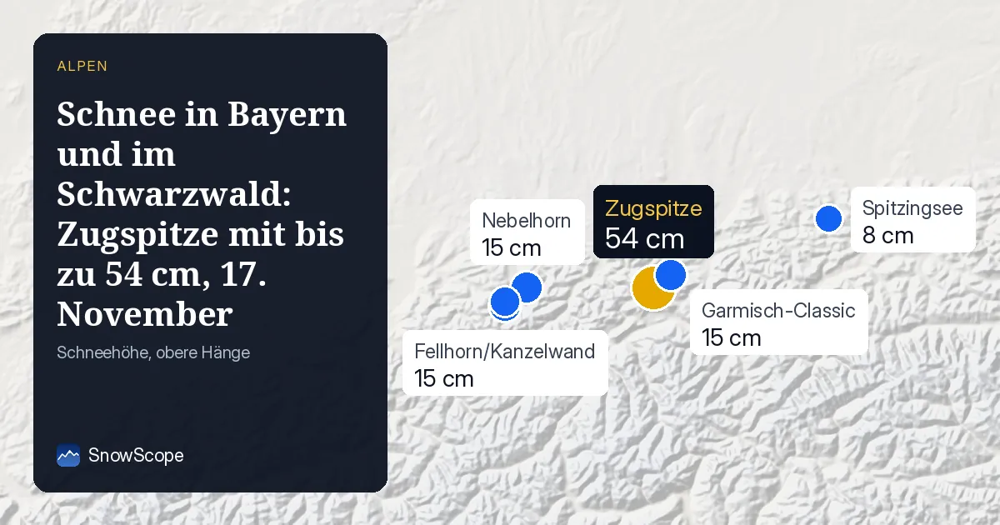
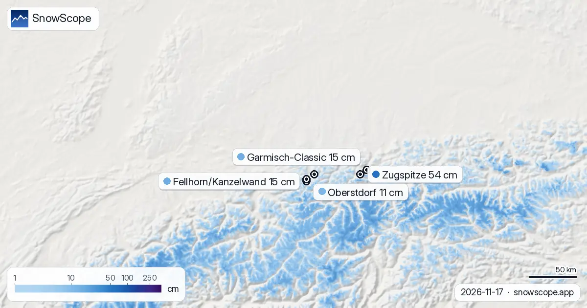

Schnee in Bayern und im Schwarzwald: Zugspitze mit bis zu 54 cm, 17. November
Zugspitze meldet an diesem Dienstag 54 cm im oberen Bereich, so viel wie kein anderes Gebiet in Bayern und im Schwarzwald.
Die Live-Schneeprognose für Zugspitze in der SnowScope-AppSchneehöhen, Pulverschnee-Alarme und 3D-Karte, gratis.
Schneehöhen nach Skigebiet
Über alle 9 Gebiete dieser Liste liegt der mittlere Wert bei 11 cm im oberen Bereich.
Der Rest der Top fünf: Fellhorn/Kanzelwand (15 cm), Garmisch-Classic (15 cm), Nebelhorn (15 cm) und Oberstdorf (11 cm).
| Skigebiet | Schneehöhe | Neuschnee, 72 h | Erwartet, nächste Tage | Gipfel |
|---|---|---|---|---|
| Zugspitze | 54 cm | 12 cm | 20 cm | 2.627 m |
| Fellhorn/Kanzelwand | 15 cm | 7 cm | 33 cm | 1.965 m |
| Garmisch-Classic | 15 cm | 5 cm | 18 cm | 2.047 m |
| Nebelhorn | 15 cm | 7 cm | 32 cm | 2.213 m |
| Oberstdorf | 11 cm | 6 cm | 33 cm | 2.213 m |
| Spitzingsee | 8 cm | 2 cm | 11 cm | 1.569 m |

Gebiet für Gebiet
Zugspitze: 54 cm im oberen Bereich (höchster Lift 2.627 m), 12 cm Neuschnee in 72 Stunden, bis 20. November weitere 20 cm.
Fellhorn/Kanzelwand hat oben 15 cm; die Lifte reichen bis 1.965 m. Neuschnee: 7 cm in drei Tagen, Vorhersage 33 cm bis 20. November.
Garmisch-Classic: 15 cm im oberen Bereich (höchster Lift 2.047 m), 5 cm Neuschnee in 72 Stunden, bis 20. November weitere 18 cm.
Nebelhorn: 15 cm im oberen Bereich (höchster Lift 2.213 m), 7 cm Neuschnee in 72 Stunden, bis 20. November weitere 32 cm.
Neuschnee der letzten 72 Stunden
Die letzten drei Tage brachten Zugspitze 12 cm, Fellhorn/Kanzelwand 7 cm und Nebelhorn 7 cm.
Die nächsten drei Tage
Bis 20. November sagt die Vorhersage Oberstdorf 33 cm, Fellhorn/Kanzelwand 33 cm und Nebelhorn 32 cm.
Abseits der Pisten
Abseits der Piste ist der Schnee im Moment alt und fest. Für Skitouren bieten die oberen Hänge mit 54 cm die beste Grundlage; vorher den Lawinenlagebericht prüfen.
Ohne viel Neuschnee sind die präparierten Pisten die beste Wahl: morgens fest, mittags auf der Sonnenseite weicher.
Wenn ihr zwei Tage habt
Am meisten Schnee fürs Geld bei zwei Skitagen: Zugspitze, mit 54 cm jetzt und 20 cm mehr bis 20. November.
Für einen Tagesausflug aus München oder Stuttgart liegen die bayerischen Gebiete und der Schwarzwald am nächsten; Tirol und Vorarlberg lohnen sich für ein, zwei Nächte.
Tipps für Skifahrer
- Vor der Anfahrt prüfen, welche Lifte laufen.
- Früh starten: Nach einer kalten Nacht ist der Schnee in den ersten Stunden am besten.
- Winterreifen oder Ketten für die letzten Kilometer zu den hohen Gebieten.
- Abseits der Piste nur nach dem Lawinenlagebericht.
Zu diesen Zahlen
Die Schneehöhen der Skigebiete sind der meiste Schnee in den oberen Hängen laut SnowScope-Schneemodell (etwa 1 km, Lauf vom 17. November); es sind Schätzungen für eine Fläche, keine Messung an einem Punkt. Werte von Messstationen sind Messungen am angegebenen Tag. Prognosen können sich ändern. Lies vor dem Freeriden immer den offiziellen Lawinenlagebericht.
Diesen Bericht zitieren
Für Forschung, Lehre oder Presse: Zahlen und Grafiken sind unter CC BY 4.0 mit dieser Quellenangabe frei nutzbar.
SnowScope (2026), Schnee in Bayern und im Schwarzwald: Zugspitze mit bis zu 54 cm, 17. November, https://snowscope.app/blog/de/2026/11/schneehoehen-bayern-schwarzwald-17-november-2026.html, abgerufen am 2026-11-17
SnowScope (Atlas Labs). (2026, November 17). Schnee in Bayern und im Schwarzwald: Zugspitze mit bis zu 54 cm, 17. November. SnowScope snow reports. https://snowscope.app/blog/de/2026/11/schneehoehen-bayern-schwarzwald-17-november-2026.html
BibTeX
@misc{snowscope2026schneehoehenbayernschwar,
author = {{SnowScope (Atlas Labs)}},
title = {Schnee in Bayern und im Schwarzwald: Zugspitze mit bis zu 54 cm, 17. November},
year = {2026},
month = nov,
howpublished = {\url{https://snowscope.app/blog/de/2026/11/schneehoehen-bayern-schwarzwald-17-november-2026.html}},
note = {Published 2026-11-17 17:35 UTC; accessed 2026-11-17}
}· CC BY 4.0 · Methoden, Daten und Werkzeuge →
Zugspitze: Schnee und Temperatur nach Höhe, dieser Winter vs letzter (Werkzeuge) →
Zugspitze folgen
Gratis: eine Nachricht, wenn Neuschnee kommt, und jeden Morgen die Vorhersage.
Weitere Schneeberichte

Ein günstiger 3-Tage-Plan am Comer See im Dezember mit echten Preisen 2026-27: Züge, Schiffe, Standseilbahn und ein Skitag in Piani di Bobbio oder Madesimo, die Ersparnis gegenüber Cortina und die Chance auf Schnee zu Weihnachten.

Alpine Tagespässe ab 36 EUR: neun Skigebiete im Vergleich nach Preis, Pistenkilometern und dem Schnee, den sie normalerweise bieten, um den besten Skitag für dein Geld zu finden.